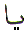

The Arabic letter
Ya  is equivalent to the letter ‘Y'
in the English alphabet. It is the last letter in the Arabic character
set. Its position is 28. Ya in Arabic numerology which is known
as Abjad, has the value of 10. This article is about the spiritual
meaning of the letter Ya.
is equivalent to the letter ‘Y'
in the English alphabet. It is the last letter in the Arabic character
set. Its position is 28. Ya in Arabic numerology which is known
as Abjad, has the value of 10. This article is about the spiritual
meaning of the letter Ya.
The letter Ya is the 18th letter in the verse Bismillah (shown at the top of this page). There is no Arabic letter after Ya. The letter Ya completes the Arabic letter set. It is the 28th and final letter. In the Abjad format, the letter Ya is given the value 10.
The letter Ya is one
of the letters of Muqattaat. That is, it is used in the opening
verses of certain chapters in the Quran. Since there are only
19 letters in the verse Bismillah, the position of the letter
Ya had to be placed sensibly in the verse Bismillah. The letter
Ya is the 28th letter in the normal Arabic letter set. In the
Abjad format, it is 10th letter with the numerical value of 10.
The position of the letter Ya in the verse Bismillah is 18. This
is arrived at by subtracting the Abjad position from the normal
position: 28 - 10 = 18 giving the position in the verse Bismillah.
The letter Ya represents knowledge.
We start learning the
Arabic letters from Alif, Ba, Ta .. Etc. We complete this learning
stage when we get to the letter Ya. At this stage we have learnt
to recognise the physical appearance of all the Arabic letters
in their different shapes. For example,
all four characters represent the same letter Ya in different
shapes. Therefore, after having learnt to recognise the letters
in their different forms, we can now start learning the words.
Since all the words in the Quran are formed by the combination
of the Arabic letters. The Arabic words will only be recognised
by a person who has first learnt to recognise the Arabic letters.
Having learnt all the Arabic letters, from Alif  to
Ya
to
Ya  represents knowledge. Hence the
letter Ya represents completion of knowledge of the Arabic letters.
represents knowledge. Hence the
letter Ya represents completion of knowledge of the Arabic letters.
When we get to the last
letter in the Arabic character set, we have only learned to recognise
the letters. To use the letters we must wrap round back to the
first letter which is Alif  . We
need to start again. That is exactly what happens when we finish
reading the last Chapter 114 An Nas of the Quran we start again
from the beginning, Chapter 1 -Al Fatihah. Or, if reciting in
Salah, Chapter 1 (Al Fatihah) has a special place. It is always
recited first in every Rakah of the Salah. After Al Fatihah we
recite any part of the Quran in the first Rakah. In the subsequent
Rakahs, after Al Fatihah, we can either recite the same portion
from the Quran, or we must recite a portion that is placed after
the portion that was recited in the previous Rakah of the same
Salah. If for example we recited Chapter 112 & 113 (Al Ikhlas
and Al Falaq) in the first Rakah, in the second Rakah, we can
either recite the same chapters again, OR, in the second Rakah
we can recite Chapter 114 (An Nas) followed by a few verses from
Chapter 2 - Al Baqara, starting at Alif Laam Meem. What we have
effectively done is come full circle.
. We
need to start again. That is exactly what happens when we finish
reading the last Chapter 114 An Nas of the Quran we start again
from the beginning, Chapter 1 -Al Fatihah. Or, if reciting in
Salah, Chapter 1 (Al Fatihah) has a special place. It is always
recited first in every Rakah of the Salah. After Al Fatihah we
recite any part of the Quran in the first Rakah. In the subsequent
Rakahs, after Al Fatihah, we can either recite the same portion
from the Quran, or we must recite a portion that is placed after
the portion that was recited in the previous Rakah of the same
Salah. If for example we recited Chapter 112 & 113 (Al Ikhlas
and Al Falaq) in the first Rakah, in the second Rakah, we can
either recite the same chapters again, OR, in the second Rakah
we can recite Chapter 114 (An Nas) followed by a few verses from
Chapter 2 - Al Baqara, starting at Alif Laam Meem. What we have
effectively done is come full circle.
This is normally obvious in the Tarawee Salah in the month of Ramadan. The Imam finishes the recitation of the whole Quran in the Tarawee during the month of Ramadan. At the completion after reciting Chapter 114, the Imam recites a few lines from Chapter 2 Al Baqara starting at verse 1. He goes back to the start, or the beginning.
The letter that comes
after the letter Ya  is Alif
is Alif  .
We start again from the beginning. Except, this time round we
have become a little wiser in recognising the letters. How can
the letter Alif follow the letter Ya?
.
We start again from the beginning. Except, this time round we
have become a little wiser in recognising the letters. How can
the letter Alif follow the letter Ya?
Of course it does! When
we gain some wisdom, we realise that there is One Supreme Being
who creates and governs our lives. We, the Muslims call Him Allah.
Then we are taught to call on Him in times of need and distress.
We call on Him with the words YA 
ALLAH, YA RABBI. Essentially,
we CALL Him with the word YA to
attract His attention, followed by His Name, ALLAH, or His Attribute
Rabb. With YA we have reached
the end and we have started again at the beginning. Where Ya  is the end and Alif
is the end and Alif  is the beginning. What we are doing is calling on Allah (
is the beginning. What we are doing is calling on Allah ( ) with the knowledge (
) with the knowledge ( )
that He Exists. He Listens. He Sees. He Gives. He Helps.
)
that He Exists. He Listens. He Sees. He Gives. He Helps.
To put it another way:
We start from Alif ( ). We conduct our lives in this world gaining
knowledge - Ya (
). We conduct our lives in this world gaining
knowledge - Ya ( ) and then we return
back to Alif (
) and then we return
back to Alif ( ).
).
The interesting thing
about the translation of the Quran into English is that all the
translators always substitute YA ()
with ‘O'. Why is that? Is it because they are copying the
YE OLDE ENGLISH? The letter ‘O' is also found in the latest
modern English translations. Is that done subconsciously? The
letter O is a circle. It wraps round endlessly. Likewise, so is
YA , a never ending circle. The letters
wrap from start to end and back to the beginning. Ya ( )
leads back to Alif (
)
leads back to Alif ( ). Just like Allah's
Attributes, Hu wal Awwalu
). Just like Allah's
Attributes, Hu wal Awwalu  wa Hu
wal Akhiru
wa Hu
wal Akhiru (He is the
First and He is the Last).
(He is the
First and He is the Last).
The numerical values of Awwal and Akhir are good examples to demonstrate this visually:
1 ( )
+ 6 (
)
+ 6 ( ) + 30 (
) + 30 ( )
= 37 = 3 + 7 = 1 FIRST
)
= 37 = 3 + 7 = 1 FIRST
1( ) + 600(
) + 600( )
+ 200 (
)
+ 200 ( ) = 801 = 8 + 0 + 1 = 9 LAST
) = 801 = 8 + 0 + 1 = 9 LAST
Start at the First number
‘1', reach the highest or Last number ‘9'. After the
Last number ‘9' we get ‘10' ( ) which leads us back to ‘1' (1 + 0 = 1 =
) which leads us back to ‘1' (1 + 0 = 1 = ).
).
The numerical value of
Ya ( ) is 10. Ya is the ‘point'
where the ‘1' and the ‘0' meet. It is not a physical
meeting. It is a spiritual meeting. It is the point where the
created one becomes aware of the Creator. It is the point where
the created one has knowledge of his Creator. This is a point
of awareness. When a person calls Ya Allah, both the caller
and One Called are present at that very moment in time, at that
very same place. The only difference is that one is visible and
the Other is hidden.
) is 10. Ya is the ‘point'
where the ‘1' and the ‘0' meet. It is not a physical
meeting. It is a spiritual meeting. It is the point where the
created one becomes aware of the Creator. It is the point where
the created one has knowledge of his Creator. This is a point
of awareness. When a person calls Ya Allah, both the caller
and One Called are present at that very moment in time, at that
very same place. The only difference is that one is visible and
the Other is hidden.
If Allah did not create us, we would not know of His existence. If Allah did not create us, we would not be here. Allah is aware of Himself. We are only aware of Allah if He brings us into existence.
The letter Ya is also one of the 14 Huroof Muqattaat which are used as the opening letters of certain chapters in the Quran. The letter Ya is used as a Muqattaat letter in two chapters of the Quran. The first usage of the letter Ya is shown here:
In Chapter 19 verse 2 we are told A recital of the mercy of the Rabb (Lord) on His servant Zakariya. What is the recital of the mercy? Is it the five letters of Muqattaat which are mentioned in verse 1? Otherwise, why mention them in the first place? Is the order of the five letters in verse 1 when recited or written, recognised as mercy from Rabb? The name Zakariya ends with the letters YA . In verse 7 of the same chapter we are told:
Allah told Zakariya ( ) to name his son Yahya
(
) to name his son Yahya
( ) whose name starts with the letter
Ya and ends with the letter Ya. There is small Alif (
) whose name starts with the letter
Ya and ends with the letter Ya. There is small Alif (  or fatha or zabar) on top of the last Ya. Notice
the last letter Ya leads back to Alif. That is exactly what the
Messengers (
or fatha or zabar) on top of the last Ya. Notice
the last letter Ya leads back to Alif. That is exactly what the
Messengers ( ) of Allah came
into this world to do. To lead the people back to Allah. If we
look at the numerical value of the name Yahya:
) of Allah came
into this world to do. To lead the people back to Allah. If we
look at the numerical value of the name Yahya:
The name Yahya has a
numerical value of 28, which is equal to the number of letters
in the Arabic character set. And the position of the letter Ya
in the Arabic character set is 28. But, what does that mean? It
means that Yahya ( ) was given the
wisdom of the letters. He was given knowledge (
) was given the
wisdom of the letters. He was given knowledge ( ).
Although in his case, it would have been the Hebrew characters
and language. Since we are not familiar with Hebrew, we are shown
by Allah, that this is the case by using the Arabic characters
and language. And Allah is the Wise.
).
Although in his case, it would have been the Hebrew characters
and language. Since we are not familiar with Hebrew, we are shown
by Allah, that this is the case by using the Arabic characters
and language. And Allah is the Wise.
What is this wisdom?
If we look at the verse number which is equivalent to the numerical value of the letter Ya we arrive at:
The word Speak or Kalaam
starts with the letter Kaaf  . Where
have we seen that before? In verse 1. Next we are told three nights.
Now if we look at verse 1 again:
. Where
have we seen that before? In verse 1. Next we are told three nights.
Now if we look at verse 1 again:
1 Kaaf ( = 20)
= 20)
2 Ha ( = 5)
= 5)
3 Ya ( = 10)
= 10)
4 Ayn ( = 70)
= 70)
5 Saad (= 90)
The third letter is Ya. Before the letter Ya we have:
Kaaf ( = 20) + Ha ( = 5) = 25 = 2 + 5 = 7.
After the letter Ya we have:
Ayn ( = 70) + Saad ( = 90) = 160 = 1 + 6 + 0 = 7.
The third letter in chapter 19 verse 1 is Ya, which is the knowledge. This letter of knowledge is placed in the centre. To bring this knowledge out, we are pointed to the number 7.
We have already looked at verse 7 of chapter 19 where Allah tells Zakariya,
A son whose name will
be Yahya ( ). The name starts
and ends with the letter Ya (
). The name starts
and ends with the letter Ya ( ) with
the letter Ha (
) with
the letter Ha ( ) in between. There
must also be something else connected with the number 7!
) in between. There
must also be something else connected with the number 7!
Chapter 19 of the Quran
is called Maryam. First of all, out of all the 114 Chapters in
the Quran, there are some chapters named after Specific names
of the Messengers ( ) of Allah. These
are listed below:
) of Allah. These
are listed below:
1 Chapter 10 Surah
Yunus
2 Chapter 11 Surah Hud
3 Chapter 12 Surah Yusuf
4 Chapter 14 Surah Ibraheem
5 Chapter 31 Surah Luqman
6 Chapter 47 Surah Muhammad
Chapter 19, Surah Maryam,
is the odd one out. Maryam ( ) was
not a Messenger of Allah, because only men were given the mission
as the Messengers of Allah. You could say that Chapter 19 is one
of 7 chapters to be named after the proper name of a person. If
chapter 19 was going to be named after a Messenger of Allah, it
could have been named Zakariya, or Yahya or Isa. But Allah had
a purpose in naming that chapter with the name Maryam to draw
our attention to it. Why did Allah name chapter 19 with the name
Maryam? There must be a reason!
) was
not a Messenger of Allah, because only men were given the mission
as the Messengers of Allah. You could say that Chapter 19 is one
of 7 chapters to be named after the proper name of a person. If
chapter 19 was going to be named after a Messenger of Allah, it
could have been named Zakariya, or Yahya or Isa. But Allah had
a purpose in naming that chapter with the name Maryam to draw
our attention to it. Why did Allah name chapter 19 with the name
Maryam? There must be a reason!
There is some dispute
between the Christians and the Muslims concerning Isa ( )
and Maryam (
)
and Maryam ( ). The Christians
are saying that Isa (
). The Christians
are saying that Isa ( ) of the Quran is
not the same person as the Jesus (
) of the Quran is
not the same person as the Jesus ( )
of the Bible. The reason behind that is Maryam (
)
of the Bible. The reason behind that is Maryam ( ),
the mother of Isa (
),
the mother of Isa ( ) is not the same
as Mary (
) is not the same
as Mary ( ) the mother of Jesus (
) the mother of Jesus ( ).
Therefore the two people in the Quran are different from the two
people in the Bible. To put it bluntly, the name Maryam is not
the same as the name Mary. This creates a problem for the Muslims.
How can the Muslims answer the Christians? There is a simple answer.
Allah in His wisdom named Chapter 19 Maryam so that we would reflect
on it and eventually answer back to the Christians.
).
Therefore the two people in the Quran are different from the two
people in the Bible. To put it bluntly, the name Maryam is not
the same as the name Mary. This creates a problem for the Muslims.
How can the Muslims answer the Christians? There is a simple answer.
Allah in His wisdom named Chapter 19 Maryam so that we would reflect
on it and eventually answer back to the Christians.
If we look at the name
Maryam and use our head like Allah tells
us to, in the Quran, we can see that Maryam (
and use our head like Allah tells
us to, in the Quran, we can see that Maryam ( )
of the Quran is the same as the Mary (
)
of the Quran is the same as the Mary ( )
of the Bible. All we have to do is think in terms of letters.
We have to go back to the basics. If we write the name Maryam
as follows:
)
of the Bible. All we have to do is think in terms of letters.
We have to go back to the basics. If we write the name Maryam
as follows:
We write the name up
to the letter of Knowledge, which is Ya or ‘y' and include
a space before we write Meem or ‘am'. Another hint is the
sign of three nights. What we have done is that we have written
the first three letters from the name Maryam and then separated
the fourth letter from the first three letters. Effectively, we
have the name Mary and initial Meem ( )
or initial ‘Am' or ‘M'. Therefore the name Maryam in
the Quran is basically Mary with initial ‘M' for Magdalene.
Allah did not just tell us about the noble lady Mary (
)
or initial ‘Am' or ‘M'. Therefore the name Maryam in
the Quran is basically Mary with initial ‘M' for Magdalene.
Allah did not just tell us about the noble lady Mary ( )
but also gave us her initial so that we may know that Mary__am
in the Quran is the same person as Mary M(agdalene) in the Bible.
Using the knowledge (
)
but also gave us her initial so that we may know that Mary__am
in the Quran is the same person as Mary M(agdalene) in the Bible.
Using the knowledge ( ) and Meem as the
Guiding letter we have shown the different names in the Quran
and the Bible to be the same name. Only, our minds did not allow
us to look at them with the Knowledge (
) and Meem as the
Guiding letter we have shown the different names in the Quran
and the Bible to be the same name. Only, our minds did not allow
us to look at them with the Knowledge ( )
bestowed by Allah.
)
bestowed by Allah.
Going back to the number 7 which was mentioned in the section The Wisdom, The name Mary has the numerical value of:
Meem ( = 40) + Ra ( = 200) + Ya ( = 10) = 250 = 2 + 5 + 0 = 7.
Remember? Alif Laam Meem. The Book in which there is no doubt (Quran: Chapter 2). All the Walee Allah (saints) tell us that: We have to unlearn everything we have learned. It means we have to go back to basics and start learning again. Too much structured knowledge places veils on our eyes and minds. Our minds become used to analysing things in a predefined way. Instead, we should learn to apply an ‘open minded' approach starting from the basics, without any preconceived starting point.
It is important to remember two points when dealing with the Arabic letters:
1 The letter Meem is always the Veil. Hijaab (Veil), Mahjub (Veiled)
2 The letter Meem is also the Guide. Murshad (Guide)
How can that be true? How can Meem place a veil and also guide?
The letter Meem by itself
is the veil. The analogy of the veil and the guide is: If we open
up the letter Meem  and write it as
pronounced, we get Meem
and write it as
pronounced, we get Meem 

 . The knowledge, Ya (
. The knowledge, Ya ( )
becomes manifest when we start to open up the letter Meem. Whereas
previously it was hidden. The core, or the kernel, is the letter
Ya
)
becomes manifest when we start to open up the letter Meem. Whereas
previously it was hidden. The core, or the kernel, is the letter
Ya  which is the knowledge. The knowledge
(
which is the knowledge. The knowledge
(  ) is surrounded by the letter Meem
(
) is surrounded by the letter Meem
( ). Therefore, the first letter
Meem (
). Therefore, the first letter
Meem ( ) hides or veils the knowledge
(
) hides or veils the knowledge
( ) and the second letter Meem (
) and the second letter Meem ( ) makes it manifest.
) makes it manifest.
The second occurrence of the letter Ya as a Muqattaat letter is shown here:
What is the wisdom? The chapter Ya Seen is called the Heart of the Quran.
Ya Seen is the Wisdom of the Quran. The wisdom of the Quran only opens with the words Bismillah Hir Rahman Nir Raheem.
Now let us look at the
letters Ya (  ) and Seen (
) and Seen ( ). The letter Ya is the second letter from
the end of the verse Bismillah in position 18. The letter Seen
is the second letter from the start of verse Bismillah. Just like
the word YA , in Ya Seen the
later letter (Seen - in Bismillah) is mentioned first and the
earlier letter (Ya - in Bismillah) is mentioned last. Again we
are made to look at the endless circle. Chapter 36 could have
started with the letters Seen Ya, but then the circular concept
would have eluded us. The circular concept can also be understood
from the verses of Ya Seen, chapter 36 in the Quran.
). The letter Ya is the second letter from
the end of the verse Bismillah in position 18. The letter Seen
is the second letter from the start of verse Bismillah. Just like
the word YA , in Ya Seen the
later letter (Seen - in Bismillah) is mentioned first and the
earlier letter (Ya - in Bismillah) is mentioned last. Again we
are made to look at the endless circle. Chapter 36 could have
started with the letters Seen Ya, but then the circular concept
would have eluded us. The circular concept can also be understood
from the verses of Ya Seen, chapter 36 in the Quran.
First, Allah creates
us. Then Allah gives us the faculties of learning to read, write
and understand. Then Allah tells us the difference between right
and wrong. Allah sent His Messengers to the communities. The Messengers
( ) of Allah came and taught their
communities the correct path to Allah. The communities that rebelled,
were destroyed by Allah. Allah then placed other communities in
their place. The circle of re-creation of communities.
) of Allah came and taught their
communities the correct path to Allah. The communities that rebelled,
were destroyed by Allah. Allah then placed other communities in
their place. The circle of re-creation of communities.
Next, there are examples of giving life to the dead earth. Followed by water flowing from the earth. Producing vegetation from the soil to feed the creation. The cycle of night and day which are again concepts of circles. Followed by the mention of orbits of the sun and moon. The moon has further stages in its orbit, whereas the sun is always seen as circular ball. Then there is the human life which is for a purpose. The human is created from nothing and this life is followed by death. A second creation takes place at the end of time to start another life which will be endless. And how does Allah do all this? He commands "Be" and it is!
From the circular concept we have just been dealing with, we can go one stage further. If we transpose, as in rotate cyclically, the 18th position of the letter Ya in the verse Bismillah we get 81. The transposed position of the letter Seen in the verse Bismillah is still 2. Add 81 to 2 = 83. The total number of the verses in chapter 36 Ya Seen is 83.
If we now reduce the
total number of verses we get 8 + 3 = 11 which is the same as
the word YA which we say to
get someone's attention. Reduce this number to single digit 1
+ 1 = 2 which is the letter Ba ( ).
The knowledge (
).
The knowledge (  ) is given to the
creature who has been created from a drop or dot. This knowledge
is guidance from Allah to us. This knowledge is our inheritance
from Allah through the Prophet Muhammad
) is given to the
creature who has been created from a drop or dot. This knowledge
is guidance from Allah to us. This knowledge is our inheritance
from Allah through the Prophet Muhammad  in the form of the Quran.
in the form of the Quran.
If we add the position of letter Ya and letter Seen in the verse Bismillah we get
18 + 2 = 20.
If we subtract the position of letter Seen from the position of
letter Ya in the verse Bismillah we get 18 - 2 = 16.
Now adding the above two results, 20 + 16 = 36 leads us back the Chapter 36 which is Ya Seen.
Again we have to look at the number 36 and arrive at the last number (3 + 6 =) 9. The number 9 is the last number after which we wrap back to the first number 1 (10 = 1 + 0 = 1).
The two chapters that have the letter Ya as one of the initials in the opening verse of the Quran are 19 and 36. If we add the number of the chapters we still arrive at the numerical value of letter Ya:
19 + 36 = 55 = 5 + 5
= 10 = 
In chapter 19 the letter Ya was placed in the core or the centre of the five letters of Muqattaat. We could say, the letter Ya was surrounded by other letters, two on each side. In chapter 36, the letter Ya is placed as the first letter to make it manifest.
Ya Seen, chapter 36 is the heart of the Quran. If we divide the chapter number (36) with the total number of chapters in the Quran (114), 36 divided by 114 = 0.3 approximately.
Or to put it another way it is approximately one third (1/3). If we look at the human body as one unit, the heart of a human being is also placed approximately one third of the way down from the head. That is the physical aspect of the chapter Ya Seen being the heart of the Quran.
The spiritual aspect is the content or the message of chapter 36. The message about creation, resurrection, (re-creation on the day of judgement). The cycles of vegetation. The mention of the four elements fire, air, water and soil. The orbits of the sun and moon. The different stages of the moon which can be interpreted as the different stages of human life. Overall, everything mentioned in the chapter has an effect on the human life. We can only experience these things if we have been created. Just like the human life can only be experienced as long as the heart is beating. As soon as it stops, all these experiences cease and the reality of our deeds dawns on us.
Alternatively, in the Abjad numerical system, the position of the letter Ya is 10th out of 28. Again 10 divided by 28 = 0.3 approximately. We could say that the letter Ya is the heart of the Abjad numerical system.
In the previous section we have seen how Ya Seen leads us to the verse Bismillah. And from the verse Bismillah, we are led back to Ya Seen. The analogy would be like the heart pumping blood to the body, and the body returning the blood back to the heart. Where Ya Seen is the heart and Bismillah is the body. The entire Quran is represented by and contained within the one verse which is Bismillah Hir Rahman Nir Raheem.
There are 28 letters in the Arabic character set. The total Abjad numerical value of all 28 letters equals 5995.
The reduced number we get is 5 + 9 + 9 + 5 = 28 That is total number of Arabic letters.
Reducing this further,
we get 2 + 8 = 10 which is the numerical value of the letter Ya
(  ). Reducing this number one more
time, we get 1 + 0 = 1 for Alif (
). Reducing this number one more
time, we get 1 + 0 = 1 for Alif (  ). The
knowledge that leads us to the One whose Name is Allah. And Allah's
Name starts with Alif (
). The
knowledge that leads us to the One whose Name is Allah. And Allah's
Name starts with Alif (  ).
).
Then we have the 14 letters
of Muaqattaat which are:
 = 1,
= 1,  = 5,
= 5,  = 8,
= 8,
 = 9,
= 9,  =
10,
=
10,  = 20,
= 20,  = 30,
= 30,
 =
40,
=
40,  = 50,
= 50,  =
60,
=
60,  = 70, =
90,
= 70, =
90,  = 100,
= 100,  =
200
=
200
The numerical value of the letters of Muqattaat = 693.
The reduced numerical value of the letters of Muqattaat is: 6 + 9 + 3 = 18.
We know from our earlier
book on the letter Ba ( ), Bismillah
is the Key to Paradise. The 18th letter in the verse Bismillah
points us to the letter Ya. Now reducing the number 18 further,
leads us to 1 + 8 = 9. That is the highest number. There is no
other number higher than the number 9.
), Bismillah
is the Key to Paradise. The 18th letter in the verse Bismillah
points us to the letter Ya. Now reducing the number 18 further,
leads us to 1 + 8 = 9. That is the highest number. There is no
other number higher than the number 9.
If we add this number
(9) to the 1 we obtained from 5995 at the start for the total
of all the 28 letters, we are back to the number (1 + 9 = ) 10
which is the numerical value of the letter Ya ( ). Whichever way we look at the letters and numbers, we are shown
that Allah has placed the knowledge in the letters of Quran. To
prove it one more time:
). Whichever way we look at the letters and numbers, we are shown
that Allah has placed the knowledge in the letters of Quran. To
prove it one more time:
If we subtract the numerical value of the letters of Muqattaat from the total numerical value of all 28 letters we get:
5995 - 693 = 5302.
Reducing this number we get 5 + 3 + 0 + 2 = 10.
We come back to the numerical
value of the letter Ya (  ) which
is connected with Knowledge.
) which
is connected with Knowledge.
There are 114 chapters in the Quran. Out of the 114 chapters, 41 chapters start with the letter Alif. No other letter is used 41 times as the first letter of the chapters. Out of 114 chapters, 14 chapters start with Ya. No other letter is used 14 times as the first letter of a chapter. Ya (used 14 times as the first letter) does wrap back to Alif (used 41 times as the first letter). The one (14 or 41) is the mirror image of the other (41 or 14). Depends from which side we are observing.
| BACK |